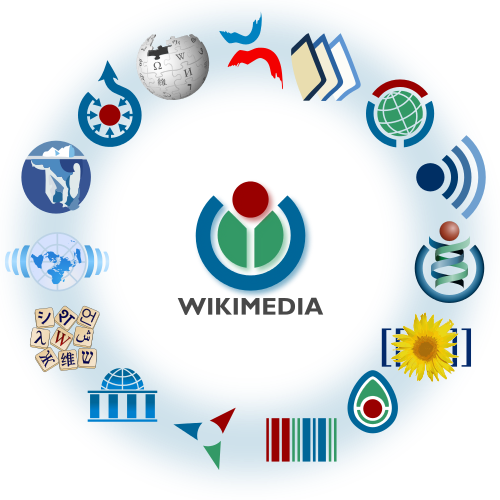
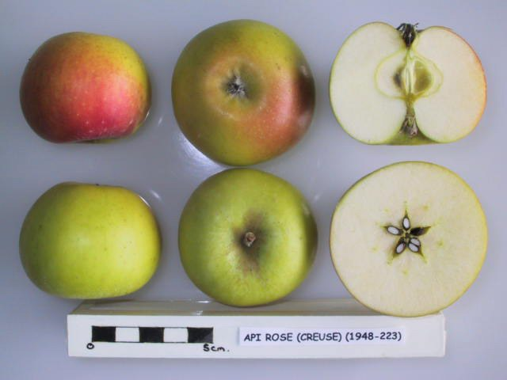
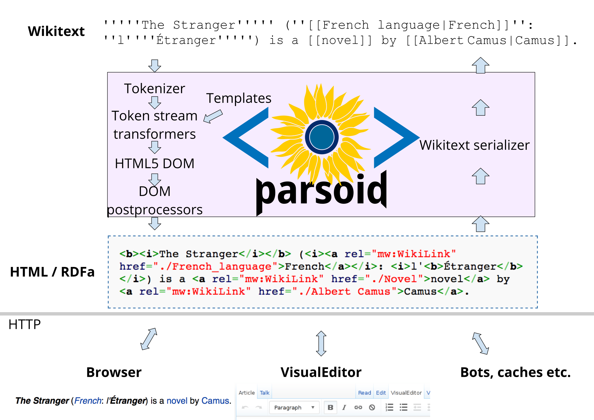
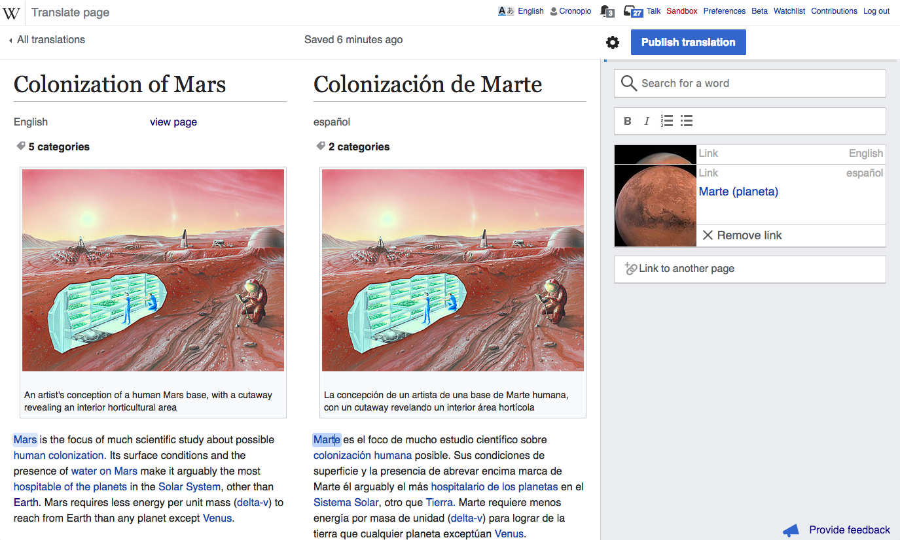
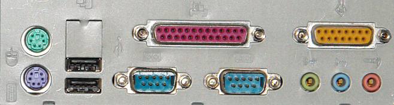
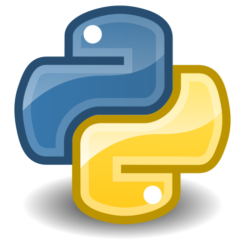
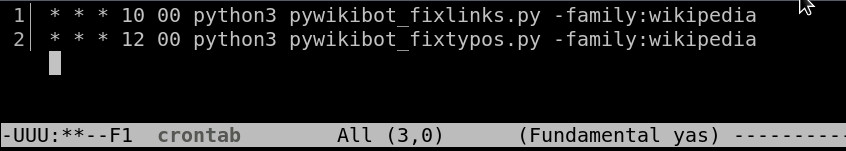
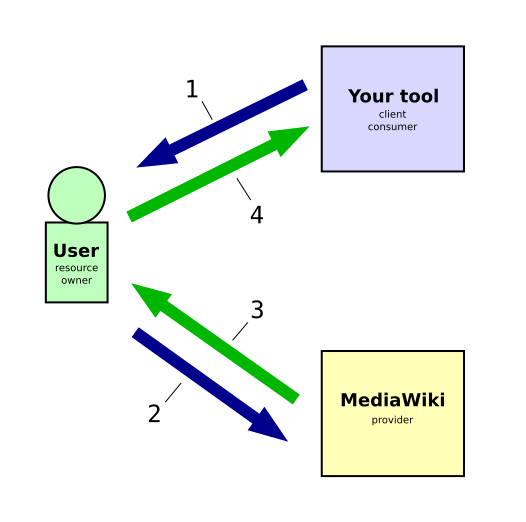
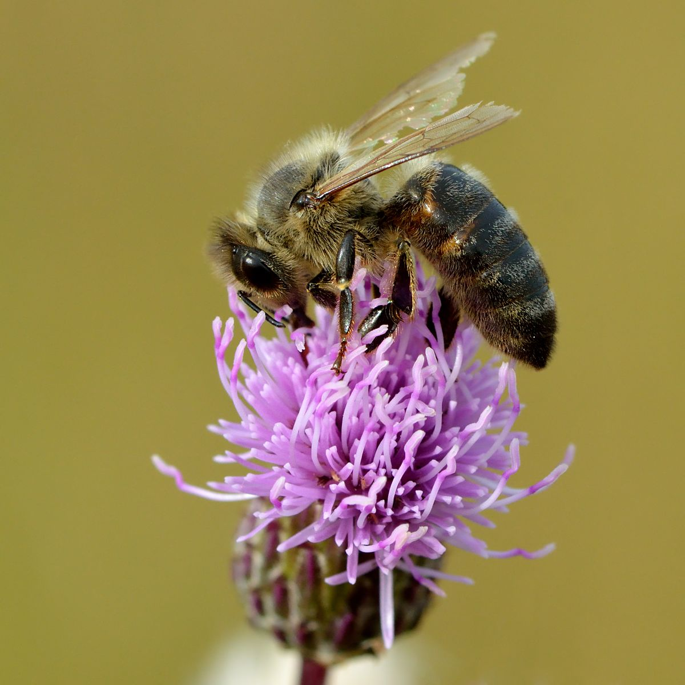
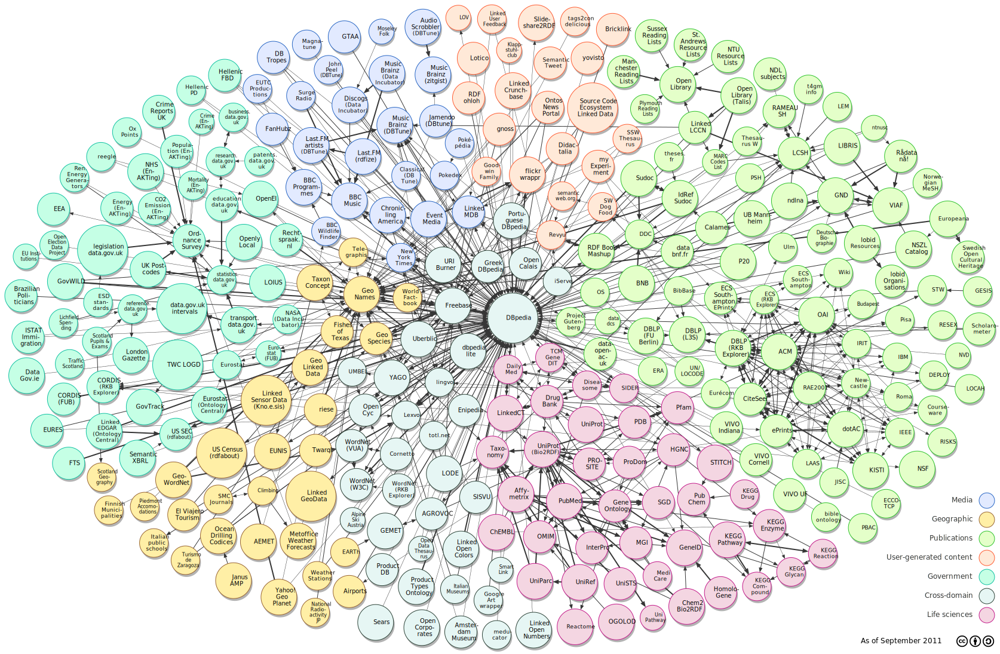

Manipuler les projets Wikimedia à distance
avec les API de MediaWiki

© Anthere, Eloquence. Aka, Chrkl, DP
User:Arkanosis — WikiConvention francophone 2019
MediaWiki et les projets Wikimedia

© Wikimedia contributors, CC-BY-SA 3.0
{kind=link}
© User:Arkanosis — CC-BY 4.0 — WikiConvention francophone 2019
MediaWiki et les projets Wikimedia
© Wikimedia contributors, CC-BY-SA 3.0
- Différent sur le fond et parfois sur la forme
- Pour des êtres humains
- … on a essayé avec des machines
- … on a eu des problèmes
- … on a essayé avec des machines
© User:Arkanosis — CC-BY 4.0 — WikiConvention francophone 2019
API ?

© National Fruit Collection, OGL 2.0
,_National_Fruit_Collection_(acc._1948-223).jpg){kind=link}
- Application Programming Interface / interface de programmation d'application
- API HTTP (HyperText Transport Protocol)
- API REST (REpresentational State Transfer)
© User:Arkanosis — CC-BY 4.0 — WikiConvention francophone 2019
Les projets Wikimedia sur mobile
- Basé sur les API !
© User:Arkanosis — CC-BY 4.0 — WikiConvention francophone 2019
VisualEditor
{kind=link}

© Jdforrester, Gabriel Wicke, Trevor Parscal, CC-BY-SA 3.0
{kind=link}
© User:Arkanosis — CC-BY 4.0 — WikiConvention francophone 2019
ContentTranslation

© Pau Giner et al., CC-BY-SA 3.0 + GFDL
{kind=link}
© User:Arkanosis — CC-BY 4.0 — WikiConvention francophone 2019
Interfaces alternatives

© George Shuklin, CC-BY-SA 1.0
{kind=link}
- Applications mobiles
- VisualEditor
- ContentTranslation
- Flow
- Pageview
© User:Arkanosis — CC-BY 4.0 — WikiConvention francophone 2019
Wikimedia REST API
_crop.jpg){kind=link}
© User:Arkanosis — CC-BY 4.0 — WikiConvention francophone 2019
Différentes API
{kind=link}
- Wikimedia REST API (RESTBase)
- Wikimedia RC API (EventStreams)
© User:Arkanosis — CC-BY 4.0 — WikiConvention francophone 2019
Wikimedia RC API
.jpg){kind=link}
- Modifications récentes en temps réel
© User:Arkanosis — CC-BY 4.0 — WikiConvention francophone 2019
Différentes API
- Wikimedia REST API (RESTBase)
- Wikimedia RC API (EventStreams)
- Wikidata Query Service (SPARQL)
© User:Arkanosis — CC-BY 4.0 — WikiConvention francophone 2019
Wikidata Query Service

© W3C, Bill Schwappacher, DP
- Données de Wikidata
- Vous restez à la présentation suivante !
© User:Arkanosis — CC-BY 4.0 — WikiConvention francophone 2019
Différentes API
- Wikimedia REST API (RESTBase)
- Wikimedia RC API (EventStreams)
- Wikidata Query Service (SPARQL)
- MediaWiki Action API
© User:Arkanosis — CC-BY 4.0 — WikiConvention francophone 2019
MediaWiki Action API

© KUHT, DP
- https://fr.wikipedia.org/w/api.php
- Plus ancienne
- Autres usages
- Bots (Salebot, OrlodrimBot…)
- Scripts et gadgets (LiveRC…)
- Sites webs et applications
- https://tools.wmflabs.org/apps-gallery/
© User:Arkanosis — CC-BY 4.0 — WikiConvention francophone 2019
MediaWiki Action API
[[Special:ApiHelp]]
© Draper Laboratory, Adam Cuerden, DP
{kind=link}
- Documentation de référence
- Complète et à jour
- Générée par le code lui-même
- En pratique d'une utilité moindre grâce à…
© User:Arkanosis — CC-BY 4.0 — WikiConvention francophone 2019
MediaWiki Action API
[[Special:ApiSandbox]]
.jpg)
© Jessie Tarbox Beals, DP
- TODO FIXME demo de la sandbox
© User:Arkanosis — CC-BY 4.0 — WikiConvention francophone 2019
Dans le navigateur

© NCSA
- TODO FIXME démo barre d'adresse
© User:Arkanosis — CC-BY 4.0 — WikiConvention francophone 2019
Dans le navigateur, avec JavaScript

© Chris Williams, DP
- https://doc.wikimedia.org/mediawiki-core/master/js/#!/api/mw.Api
- Tout autre type d'API
- https://test2.wikipedia.org
- [[Special:MyPage/common.js]]
- F12 sous Firefox, Chromium…
- [[Projet:JavaScript]]
© User:Arkanosis — CC-BY 4.0 — WikiConvention francophone 2019
Hors du navigateur
 |
|
| © Soft Dreams, CC-BY-SA 4.0 | © Stephen Dolan, CC-BY 3.0 |
- Installer CURL : https://curl.haxx.se/download.html
- Installer jq : https://stedolan.github.io/jq/
- FIXME
FIXME
© User:Arkanosis — CC-BY 4.0 — WikiConvention francophone 2019
Programmation

© Msoos, CC-BA-SA 3.0
- [[mw:API:Client code]]
- Attention, il n'est pas possible d'utiliser l'API en Lua depuis Scribunto !
© User:Arkanosis — CC-BY 4.0 — WikiConvention francophone 2019
Programmation : exemple de Python

© Tango! Project, GPLv2+
{kind=link}
- Installer python
- Linux / macOS
python3 --version - Windows
- https://www.python.org/downloads/windows/
- Ajouter python au %PATH%
- Linux / macOS
© User:Arkanosis — CC-BY 4.0 — WikiConvention francophone 2019
Programmation : exemple de Python
- Créer un venv
python -m venv mon_venv - Activer le venv
source ./mon_venv/bin/activate # Linux / macOSmon_venv\Scripts\activate.bat # Windows
- Installer
requestspython -m pip install requests
© User:Arkanosis — CC-BY 4.0 — WikiConvention francophone 2019
Programmation : exemple de Python
- Exécuter un script
python mon_script.py
© User:Arkanosis — CC-BY 4.0 — WikiConvention francophone 2019
Pour résumer : dans le navigateur

© Paul Irish, Google, Microsoft, Mozilla, Opera, Apple
- Avantages
- Authentification gérée par MediaWiki
- Disponible partout
- Inconvénients
- Uniquement sur les sites Wikimedia
- Difficilement automatisable
- JavaScript uniquement
© User:Arkanosis — CC-BY 4.0 — WikiConvention francophone 2019
Pour résumer : hors du navigateur

© Arkanosis, DP
{kind=link}
- Avantages
- Choix de la techno (Python, Java, shell…)
- Choix de la plate-forme (PC, mobile, Raspberry Pi)
- 100 % automatisable
- Inconvénients
- Gestion de l'authentification
- Besoin d'environnement approprié
© User:Arkanosis — CC-BY 4.0 — WikiConvention francophone 2019
Troisième option : via un service tiers

© EpochFail, CC-BY-SA 3.0
{kind=link}
- Typiquement avec OAuth2
- Avantages
- Authentification partiellement gérée par MediaWiki
- Disponible partout
- Choix de la techno (Python, Ruby, Elixir…)
- 100 % automatisable
- Inconvénients
- Complexe à mettre en place
- Besoin d'un serveur
© User:Arkanosis — CC-BY 4.0 — WikiConvention francophone 2019
== Voir aussi ==

© Ivar Leidus, CC-BY-SA 4.0
{kind=link}
© User:Arkanosis — CC-BY 4.0 — WikiConvention francophone 2019
~~~~

© Richard Cyganiak, Anja Jentzsch, CC-BY-SA 3.0
{kind=link}
- frwp.org/User:Arkanosis
- jroquet@arkanosis.net
- @Arkanosis freenode, GitHub,
TwitterMastodon…